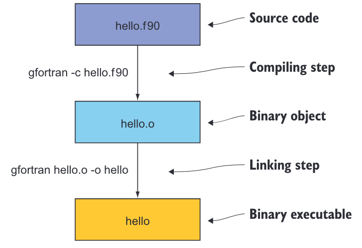
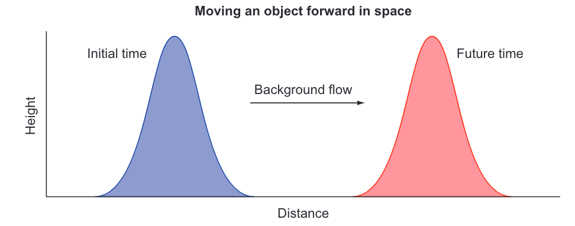
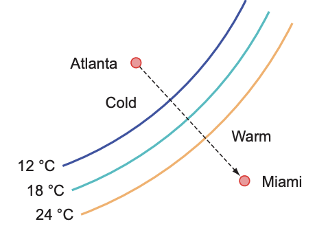
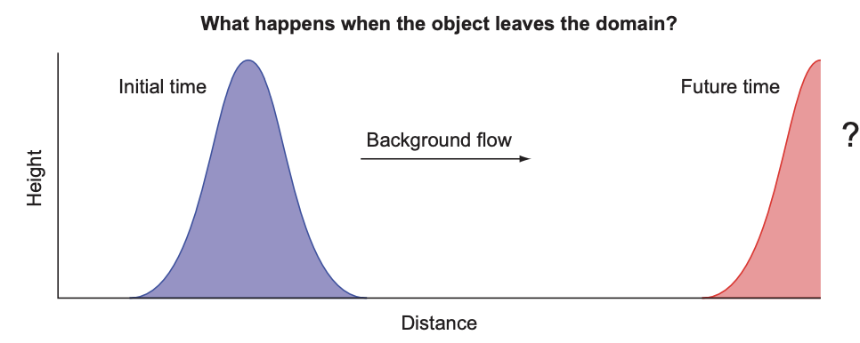
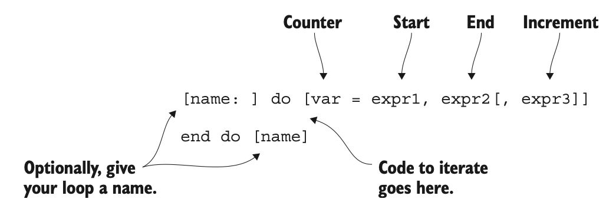
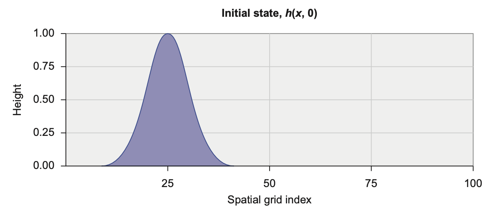
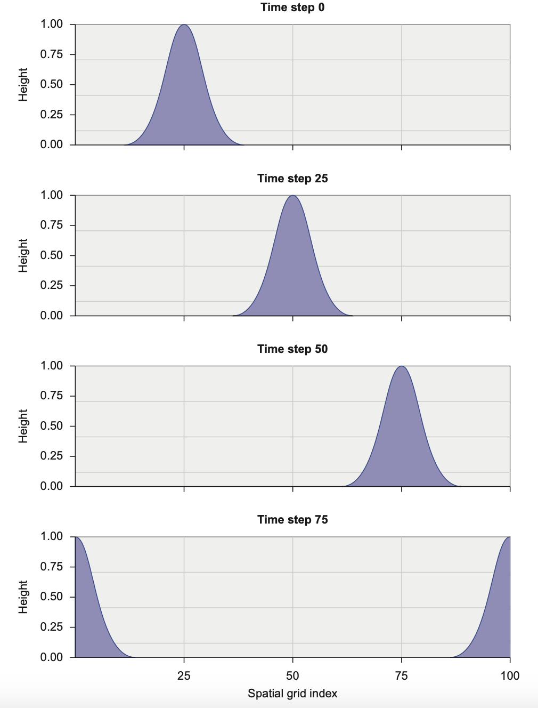

《Moddern Fortran——创建高效并行应用》：第二章 入门
第2章 入门：最小可行应用
本章涵盖
- 编译和运行你的第一个Fortran程序
- 数据类型、声明、算术和控制流
- 构建和运行你的第一个模拟应用
在本章中，我们将实现海啸模拟器的最小可行版本。为简单起见，我们将从模拟水在空间中的移动开始，而不改变其形状。这个问题足够复杂，可以介绍Fortran的基本要素：数值数据类型、声明、算术表达式和赋值，以及控制流。一旦我们成功地在本章中模拟了对象的移动，我们将重构代码，在第3章和第4章中添加其他物理过程，从而使模拟的水流动更加真实。实现其他过程将更容易，因为我们将能够重用在本章中编写的大部分代码。
我们将从编译、链接和运行你的第一个Fortran程序开始。然后，我将介绍我们想要解决的物理问题，并向你展示如何将其表达为计算机程序的形式。接着，我们将深入探讨Fortran的基本要素：数据类型、声明、算术和控制流。在本章结束时，你将具备编写基本但实用的Fortran程序的工作知识。
2.1 编译和运行你的第一个程序
让我们首先创建、编译和运行你的第一个Fortran程序。我假设你已经在系统上安装了GNU Fortran编译器（gfortran）。如果还没有安装，请按照附录A中的说明进行设置。
当你安装了编译器后，请通过编译和运行你的第一个Fortran程序来测试它，如下面的示例所示。
程序2.1 您的第一个Fortran程序：hello.f90
! 开始程序并为其命名
program hello
! 向终端打印简短的问候语
print *, 'Hello world!'
! 结束程序
end program hello
这个程序只做一件事情——向终端打印一条简短的问候信息，这是大多数编程书籍中第一个示例的常见做法。让我们将其保存在名为 hello.f90 的文件中。编译非常简单，只需将源文件传递给编译器，可选地指定输出（-o）可执行文件的名称：
gfortran hello.f90 -o hello
如果您不使用 -o 指定输出文件的名称，则可执行文件的名称默认为 a.out。
运行程序会产生预期的输出：
./hello ## 通过输入可执行文件名运行程序
Hello world! ## 程序在终端中的输出
这就是全部——你编写并编译了你的第一个Fortran程序！让我们看看在幕后发生了什么。构建程序通常涉及两个步骤： 1 编译 — 编译器解析高级语言（这里是Fortran）的源代码，并输出相应的一组机器指令。在我们的情况下，gfortran将读取带有 .f90 后缀的Fortran源文件，并输出一个相应的二进制对象文件，其后缀为 .o。大多数编译器都接受其他源文件的后缀，如 .f、.f03 或 .f08；然而，为了保持一致性，我建议坚持使用 .f90。 2 链接 — 二进制对象文件（.o），是编译步骤的结果，本身无法执行。链接器通常由编译器在幕后调用，将二进制对象文件组合成一个或多个可执行程序。
要构建我们的第一个程序，我们只需输入一个命令，即 gfortran hello.f90 -o hello，这意味着没有将编译和链接分为两个独立的步骤。当整个程序包含在一个单独的文件中时，将编译和链接步骤组合在一个命令中就足够了。该命令等同于以下程序。
程序2.2 编译和链接作为单独的步骤
gfortran -c hello.f90 ## 仅编译，无链接
gfortran hello.o -o hello ## 链接对象到可执行文件
在这段代码中，编译器选项 -c 表示 仅编译，不链接 。这个过程在我们需要在链接成一个程序之前编译多个源文件时是必要的。随着你的应用程序或库的规模增大，你会发现将其分割成多个文件会更容易组织和进一步开发。我在图 2.1 中说明了构建顺序。

图 2.1 显示了将输入的源代码生成二进制目标文件和可执行文件的编译和链接步骤。源文件 hello.f90 被传递给编译器，编译器输出一个二进制目标文件 hello.o。然后将目标文件传递给链接器，链接器输出一个二进制可执行文件 hello。链接器被隐含地包含在编译器命令（
gfortran）中。
GNU Fortran编译器可以接受许多其他选项，用于控制语言规则、警告消息、优化和调试。我鼓励你继续阅读手册。你可以在命令行上键入 man gfortran 来访问它。如果你的系统上没有手册页面，你可以随时在 https://gcc.gnu.org/onlinedocs/gfortran 上访问最新的 gfortran 文档。
2.2 模拟物体运动
在上一章的最后，我介绍了浅水方程组，我们将在本书中努力解决这些方程，以产生一个逼真的海啸模拟。在这里，我们将从头开始实现模拟器，包括源代码和我们将用它模拟的物理过程。我们将首先模拟的过程是物体运动，因为背景流动而引起的。在物理学中，我们将这种运动称为线性对流。对流意味着在空间中移动，而线性属性意味着背景流与物体的形状和位置无关。如果你不是数学或物理方面的专家，这听起来可能有些吓人，但不用担心！在接下来的小节中，我将说明对流的工作原理，并展示你如何计算它，而不必理解其背后的所有数学原理。
从微积分到代码
如果你想深入了解这个问题背后的数学知识，请前往附录 B。在那里，我解释了梯度，这是对流背后的关键概念，以及如何使用有限差分在计算机代码中表达它。这一步是重要的，因为它构成了表达浅水方程中所有其他项的基础。否则，如果你想跳过数学部分，直接进入编程部分，那就继续吧！
在下一小节中，我将阐述问题并为我们的应用程序设定一些要求。然后，我将通过一个说明性的对流示例来指导你，展示如何在不编写任何代码的情况下计算它。最后，在本章的其余部分，我们将一起着手实现我们应用程序的第一个版本。
2.2.1 我们的应用程序应该做什么？
在这个阶段，我们只会模拟物体（或流体）由于背景流而产生的运动。这将为我们在后续章节中将要添加到求解器中的其他物理过程提供基础。现在只模拟一个过程将指导我们的程序结构及其组成部分的设计：数据的声明和初始化，按时间向前迭代模拟，并将结果写入终端。我在图 2.2 中勾勒了我们期望的结果。

图 2.2 在空间中对物体进行对流运动，从左到右。初始状态在左侧。物体被背景流从左到右对流，经过一段时间后到达最终位置在右侧。
请注意，被对流的物体可以是任何量，例如水位、温度或污染物的浓度。就目前而言，为简单起见，我们将其简称为物体。物体的形状也是任意的，可以是任何连续或不连续的函数。我选择了一个平滑的凸起方便起见。在初始时间，物体位于域的左侧附近。我们的目标是模拟由于背景流而导致的物体运动，并记录物体在未来某个时间的状态。在内部，我们的应用程序需要执行以下步骤：
- 初始化 ——— 定义将在计算机内存中保存物体状态的数据结构，并初始化其值。
- 模拟 ——— 此步骤将计算物体位置随时间的变化。在此阶段，我们预计它只会从左向右移动，形状不变。模拟在许多离散时间步骤上进行，并占据程序消耗的大部分计算时间。
- 输出 ——— 在每个时间步骤中，我们将记录物体的状态，以便我们可以用外部程序可视化它。
正如您所料，我们程序的核心将围绕模拟步骤展开。我们如何开始模拟物体的移动？在编写任何代码之前，我们需要了解对流的工作原理。
2.2.2 什么是对流？
维基百科将对流定义为“物质或量通过整体运动的传输。” 对流是物理学、工程学和地球科学中的基本过程。它决定了固体物体或流体由于背景流而在空间中移动的方式。当游泳者顺流而泳时，他们被流水带动，与地面的速度相对较低，而如果没有任何流动，他们的速度会更快。对流也是我们在加勒比海、巴西或北欧上空发现撒哈拉沙尘的原因，也是垃圾在海洋盆地中汇聚的原因。
我之前提到，在本章中我们只讨论线性对流。这里的线性意味着可以假设背景流是恒定的，并且不会因为与被对流的物体本身的相互作用而改变。如图2.2所示，物体以与物体本身无关的恒定速度移动。换句话说，物体的形状和位置不会影响背景流。然而，在现实世界中，这几乎从来没有发生过！速度的非线性对流是产生湍流的原因。小涡流在河流中，商业飞行中偶尔的颠簸，以及我们在木星大气的照片中看到的大理石纹理，都是由于不同空间尺度上的非线性对流造成的湍流的例子。我们将把非线性对流留到第4章；在这里，我们只关注线性部分。
为了更好地理解对流的工作原理，考虑一下冷锋穿过美国东南部的情况（图2.3）。冷锋是与中纬度气旋相关的大尺度天气现象。它通常在北半球从西北向东南移动（在南半球从西南向东北移动），并带来凉爽而干燥的空气。我住在南佛罗里达州，冷锋的来临总是引人期待，因为它们带来了来自北方的清爽凉爽的空气。

图 2.3 展示了一张冷锋从亚特兰大向迈阿密移动的插图。曲线表示恒定温度的等值线。虚线箭头显示了前方传播的方向。
现在我给你一个小练习。考虑以下情况：
- 亚特兰大的温度为 12°C，迈阿密的温度为 24°C。
- 亚特兰大和迈阿密之间的距离为 960 公里。
- 冷锋以每小时 20 公里的恒定速度向迈阿密移动。
假设没有其他影响因素，温度变化在空间上是均匀的：
- 亚特兰大和迈阿密之间的温度梯度是多少？梯度是两个位置之间数量（在这里是温度）的差异，除以它们之间的距离。在这种情况下，温度梯度的单位是°C/公里。
- 温度在多长时间内会降至 12°C？
- 最后，经过 24 小时，迈阿密的温度将是多少？你是如何得出这个结果的？
尝试用纸和笔解决这个问题。当你完成练习后，即使你没有意识到，你也已经解决了线性平流方程。平流方程预测了任何数量由于该数量的空间梯度和背景流的变化而发生的变化。我们将使用完全相同的计算方法来预测模拟器中对象的运动。你可以在本章末尾的“答案”部分找到这个练习的答案。
2.3 实现最小工作应用
设置要解决的问题后，我们很快就能开始深入研究 Fortran 编程。但首先，我们将在下一小节中讨论实施策略（你应该总是有一个）。然后，我们将介绍语言的核心要素，并将它们应用于实现海啸模拟器的第一个版本。
2.3.1 实施策略
在进行任何编码之前，草拟我们实现第一个应用程序版本的初步策略将是有帮助的：
-
定义主程序。这将定义程序名称和范围。主程序单元提供了一个骨架来保存数据的声明和可执行代码，比如算术、循环等等。
-
声明和初始化变量和常量。我们需要声明我们程序中打算使用的所有变量和常量：
- 整数计数器
i和n，分别用于空间和时间，以及相应的循环维度grid_size和num_time_steps。空间维度大小size，grid_size将确定数组的长度，而时间维度大小num_time_steps将确定我们将计算解的迭代次数。 - 背景流速度
c、时间步长dt和网格间距dx的物理常数。 - 用于水位
h及其有限差分dh的实值数组，使得对于每个i，dh(i) = h(i) - h(i-1)。数组dh对于在内存中保留多个时间级别计算解是必要的。
- 整数计数器
-
计算一组固定数量时间步的方程解。这一步包括三个明确的部分：
- 循环一组固定数量的时间步（
num_time_steps）。 - 在每一步，根据上一时间步的值计算水位
h的新值。 - 因为我们的域的大小是有限的（
grid_size），我们需要定义边界条件。当对象到达域的最右边缘时会发生什么情况（见图 2.4）？
在这里我们有几个选择。对象可能被边界吸收，完全离开域而不留痕迹，或者被反射回域内，就像球撞到墙壁一样。另一个选择是周期性（或循环）边界条件，它连接了域的右边缘和左边缘。在这种情况下，对象会通过右边并重新出现在左边。这是全球大气和海洋预测中的常见选择，因为我们的星球在计算域中的表示方式。如果你往东走足够远，你最终会到西边！因此，我们将在我们的应用程序中实现周期性边界条件。
- 循环一组固定数量的时间步（
-
在每一步将解输出到终端。起初，我们不需要复杂或特别格式化的输出。让我们只是将我们的解以默认文本格式输出到屏幕上。如果我们想要将输出存储在文件中以进行分析或绘图，我们可以轻松地将输出重定向到文件中。
听起来不错吧？让我们逐一解决这些问题。

图 2.4 边界条件决定了当对象到达域的边缘时会发生什么。它应该只是离开吗？像球撞到墙壁反射回域内？或者循环并重新出现在左侧？
2.3.2 定义主程序
主程序是Fortran中的基本程序单元。它允许您为程序指定一个名称，并定义程序的范围，如下面的代码所示。
程序2.3 定义程序单元和范围
program tsunami ! 开始新程序并为其命名
end program tsunami ! 结束程序
给程序指定一个名称在实践中并没有实际作用，但当您开始使用数十个不同的程序时，它可以帮助您保持组织性。
编译和链接主程序源文件会生成一个可执行文件，您可以从主机操作系统中调用它（参见图 2.1）。您无法从其他程序单元调用主程序。
还有哪些程序单元？
在这里，我为您提供了第 3 章和第 4 章即将介绍的内容的一瞥。不同的程序单元可以一起形成一个可执行程序或一个不可执行的库：
- 主程序(Main program) —— 顶层单元，只能从操作系统中调用
- 函数(Function) —— 从表达式中调用的可执行子程序，始终返回单个结果
- 子程序(Soubroutine) —— 可执行子程序，可以原地修改多个参数，但不能用于表达式中
- 模块(Modue) —— 变量、函数和子程序定义的非可执行集合
- 子模块(Submodule) —— 扩展现有模块，用于定义仅该模块可以访问的变量和过程定义；对于更复杂的应用程序和库非常有用
目前，我们只能使用主程序。我们将在第 3 章深入研究函数和子程序，而在第 4 章中则是模块。
程序语句不是强制性的。对于简短的测试程序，省略它可能很有用。但是，最好的做法是包含它，并与相应的 end program语句配对。从技术上讲，end是任何Fortran程序唯一必需的语句。该语句也构成了最简单的、虽然无用的Fortran程序。
提示：始终将程序语句与相应的
end program语句配对。
2.3.3 声明和初始化变量
显式胜于隐式。 —— Tim Peters
程序单元的第一部分是声明部分。Fortran 使用静态、显式、强类型系统：
- 静态 — 每个变量在编译时都有一个数据类型，并且该类型在程序的整个生命周期内保持不变。
- 显式 — 在使用之前，所有变量都必须在声明部分中明确声明。隐式声明是一个例外和警告，会在边栏中描述。
- 强类型 — 当变量在程序和函数或子程序之间传递时，变量必须是类型兼容的。
隐式类型声明
Fortran 具有一项历史特性，称为隐式类型声明，它允许编译器根据变量的首字母推断变量类型。是的，你没看错。隐式类型声明来自 Fortran（咳咳，FORTRAN）早期（即类型声明被引入语言之前）的时期。任何以 I、J、K、L、M 或 N 开头的变量都是整数，否则是实数（浮点数）。FORTRAN 66 引入了数据类型，而 FORTRAN 77 引入了
IMPLICIT语句以覆盖默认的隐式类型声明规则。直到 Fortran 90，该语言才允许通过在声明之前使用implicit none语句完全禁用隐式类型声明行为。
implicit none语句将指示编译器在尝试使用未声明的变量时报告错误。始终使用implicit none！
内置类型由语言标准定义，并可立即供使用。Fortran 有三种数值类型：
integer：整数，例如42或-17real：浮点数，例如3.141或1.82e4complex：一对数值：一个是复数的实部，另一个是虚部；例如(0.12, -1.33)
数值类型还有不同的种类。Fortran 种类指的是为变量保留的内存大小。它决定了可允许的数值范围，在实数和复数的情况下，还决定了精度。一般来说，更高的整数种类允许更广泛的数值范围。更高的实数和复数种类会产生更高的允许范围和更高的数值精度。您将在第 4 章中更多地了解数值类型种类。
除了数字内置类型外，Fortran 还有逻辑类型 logical 用于表示布尔（true或 false）状态，以及字符类型 character 用于文本数据。这五种内置类型（integer、real、complex、logical 和 character）是 Fortran 程序中所有变量的基础。您还可以使用它们创建任何复杂度的复合类型，称为派生类型，类似于 C 中的 struct 和 Python 中的 class。我们将在第 8 章深入探讨派生类型。
提示：始终使用
implicit none。该语句强制对所有变量进行显式声明，这既作为程序员的文档，也允许编译器为您查找并报告类型错误。
2.3.4 数值数据类型
Fortran 提供了三种基本的数值数据类型：整数（integer）、实数（real）和复数（complex）。
整数
整数是 Fortran 中最简单的数值类型。以下是整数字面量的一些示例：
0 1 42 100 -500 +1234567
您可以像这样声明一个或多个整数：
integer :: i, n
该语句指示编译器在内存中为整数变量 i 和 n 保留空间。它由左侧的类型语句（integer）、中间的双冒号（::）以及用逗号分隔的变量列表组成。
整数的一般规则：
- 整数始终有符号 —— 它们可以是负数、正数或零。
- 它们的范围受其类型种类的限制。较大的类型种类会产生更广泛的范围。
- 超出变量允许范围的结果是溢出。在这种情况下，变量的值将围绕其范围限制进行循环。
- 默认情况下，内存中的整数大小未由 Fortran 标准定义，因此是与系统相关的。但是，在大多数系统上，默认的整数大小为 4 个字节。
实数
实数，也称为浮点数，描述了沿着连续（非离散）轴具有值的任何数字。以下是一些实数的示例：
0.0 1.000 42. 3.14159256 -5e2 +1.234567e5
前四个数值很直观 —— 小数点将数字的整数部分与小数部分分隔开。最后两个可能看起来有些奇怪，因为它们是使用指数表示法写成的。它们由字符 e 的左侧是整数或实数，右侧是表示十进制指数的整数组成。因此，-5e2 对应于 $-5 × 10^2$，+1.234567e5 对应于 $1.234567 × 10^5$。对于正数，一元加号符号是可选的。我们将在第 6 章中更多地讨论实数的格式。
要注意小数点！
在编写字面常量时，存在一个细微的界限，决定了编译器将其理解为整数还是实数。在数字后面加一个小数点就会产生区别。例如，
42是一个整数，但42.是一个实数。这与 C 或 Python 的行为相同。
我们使用关键字 real 来声明实数：
real :: x
这个声明语句类似于整数的声明语句，只是类型和变量名不同。
复数
复数简单地说就是一对实数，一个用于实部，另一个用于虚部。它们的声明和初始化如下：
complex :: c = (1.1, 0.8)
复数的内置类型被引入到Fortran中，使得复数的算术运算更容易编程。根据你的应用，你可能会经常使用它们，也可能根本不使用。
2.3.5 在我们的应用程序中声明要使用的数据
现在，您已经了解了如何声明特定数字类型的变量，让我们声明一些在海啸模拟器中将要使用的变量、常量和数组。 声明变量 我们需要哪些类型的变量？作为提醒，根据我们在第2.3.1节中的实现策略，我们需要以下内容：
- 空间数组大小，
grid_size和时间步数，num_time_steps - 物理常数，如时间步长
dt、网格大小dx和背景流速度c - 一维数组以携带水位
h的值及其在空间中的差异dh - 一个整数索引
i，用于引用单个数组元素h(i)，另一个用于在时间上进行循环n
由于我们需要先指定 grid_size，然后才能声明数组 h，所以让我们先声明标量变量和常量，然后再声明数组，如下面的清单所示。
程序 2.4 声明和初始化整数和实数变量
program tsunami
implicit none ! 强制显式类型声明
! 整数声明
integer :: i, n
integer :: grid_size
integer :: num_time_steps
! 实数声明
real :: dt ! 时间步长 [秒]
real :: dx ! 网格间距 [米]
real :: c ! 相速度 [米/秒]
! 初始化整数
grid_size = 100
num_time_steps = 100
! 初始化实数
dt = 1.0
dx = 1.0
c = 1.0
end program tsunami
声明部分以 implicit none开始，并且在第一条可执行代码（grid_size = 100）之前立即结束。所有声明都集中在程序的开头。
注释代码
Fortran的注释以感叹号（!）开始。它们可以从行的开头开始，也可以跟在任何有效的语句后面。
理想情况下，你的代码应该足够清晰，不需要任何注释。然而，这通常是不可能的，大多数程序至少需要一些注释。请谨慎使用。如果代码本身的意图不明显，就在注释中描述它。
最后，没有注释总比有不准确或过时的注释要好。
对于在程序运行期间不会改变值的变量，将它们声明为常量是很有用的。这样可以让编译器更好地优化代码，并防止您意外更改常量的值。我们将在下一节中声明常量。
目前，我们的程序不会做太多事情，因为它只包含数据声明。但是，您可以随意对其进行调整、重新编译，并且更好的是，尝试让它出现问题！看看编译器是否会抱怨。
声明常量
其中一些变量将是常量，Fortran允许您将它们显式地声明为常量。这样做将帮助您编写正确的代码，如果您尝试更改常量的值，将触发编译器错误，并且将帮助编译器优化代码。您可以使用parameter属性声明常量（也称为不可变量），如以下清单所示。
程序2.5 声明并初始化常量
integer, parameter :: grid_size = 100 ! 网格大小
integer, parameter :: num_time_steps = 100 ! 时间步数
real, parameter :: dt = 1, dx = 1, c = 1 ! 时间步长（秒），网格间距（米），背景流速（米/秒）
使用 parameter 属性要求我们在同一行上初始化变量。
提示：如果一个变量的值在编译时已知，并且在程序执行期间不会改变，请将其声明为参数。
声明数组
数组是Fortran中最强大的功能之一。它们具有几个有用的特性：
- 连续性：数组元素在内存中是连续的。在现代处理器上对数组进行索引和逐元素算术运算非常高效。
- 多维性：Fortran标准允许数组具有多达15个维度。相比之下，在C语言中，您必须通过定义数组的数组来模拟多维度。
- 静态或动态：Fortran数组可以是静态的，在编译时设置维度，也可以是动态的，在运行时设置维度。
- 整体数组算术：您可以像使用标量算术运算符和数学函数一样，对数组进行操作。
- 列主索引：Fortran数组使用列主索引，类似于MATLAB或R，与C或Python不同，后者使用行主索引。因此，第一个（最左边的）索引变化最快。例如，
a(1,1)、a(2,1)、a(3,1)等是数组a的连续元素。在循环访问多维数组的元素时，请记住这一点。
在将整数网格大小声明为参数后，我们可以使用它来设置保存水面高度值的数组h的大小。您可以使用 dimension 属性声明固定长度（静态）的实数组，并使用整数参数指定数组大小：
! 将h声明为包含元素数量等于 `grid_size` 的实数组。
real, dimension(grid_size) :: h
dimension 的参数是数组的整数长度，在我们的情况下，是参数 grid_size。
声明数组的简写语法
您可以通过省略
dimension属性，并在数组名称后面的括号中直接指定数组长度的方式来更简洁地声明数组：real :: h(grid_size)您使用
dimension属性还是更简洁的形式完全取决于您。但是，为了节省代码清单中的空间，我将在本书中始终使用简写语法。
正如我之前提到的，Fortran 的一个优势是其对多维数组的内在支持。您可以通过在声明语句中指定来定义多达 15 维的数组，例如：
real, dimension(10, 5, 2) :: h
在这里，h 被声明为一个三维数组，共有 $100$ 个元素 $(10 * 5 * 2)$。
动态数组怎么样？
您可能已经注意到，在两个数组声明中，我们都使用整数文字来设置数组的大小和形状。然而，如果我们的数组维度直到运行时才知道怎么办呢？Fortran 提供了对动态数组（也称为可分配数组）的出色支持。当您声明一个可分配数组时，您只需在声明中指定数组的秩（维数），而不是维度的大小。一旦大小确定，就可以使用
allocate语句来分配具有指定维度的数组。可分配数组也可以动态重新分配任意次数。在第 5 章中，您将看到更多关于可分配数组的内容，我们将在我们的应用程序中充分利用它们。
现在，我们的应用程序需要两个数组——一个用于水位 h，另一个用于其有限差分 dh：
real :: h(grid_size), dh(grid_size)
现在我们已经声明并准备好我们的数据结构，让我们看看我们可以用它们做些什么。
2.3.6 使用 if 块进行分支
几乎每个计算机程序的关键要素之一是根据某些条件采取不同的执行路径（分支）。例如，考虑一个解析客户银行账户注册表单的程序。如果其中一个输入字段输入不正确，比如社会安全号码带有字母或姓名带有数字，程序应该提醒用户并要求输入正确的内容，而不是继续进行。您可以使用 if 块定义这种程序行为。在我们的海啸模拟器中，目前我们将使用 if 块来检查输入网格和物理参数的值，如下所示：
程序2.6 检查输入参数值
if (grid_size <= 0) stop 'grid_size must be > 0'
if (dt <= 0) stop 'time step dt must be > 0'
if (dx <= 0) stop 'grid spacing dx must be > 0'
if (c <= 0) stop 'background flow speed c must be > 0'
在这里，我们检查参数的值，以确保程序能够进行有意义的模拟。具体来说，我们需要一个至少有一个元素的网格，尽管这不会产生特别有趣的模拟。我们还需要时间步长、网格间距和背景流速度都为正值。条件在括号中声明，在 if 后面立即跟着。在右侧，我们指定在括号中的条件评估为真时要执行的语句。在这种情况下，我们使用 stop 语句来中止程序的执行，并为用户打印一个有用的消息。
这只是 if 语句的最简单用法之一。以下是它的一般语法：
if (condition) ...
如果需要在条件上执行多个语句，您可以使用更详细的 if 块，如下面的示例所示。
程序 2.7 带有一个条件和一个分支的
if块的一般语法
if (condition) then
... ! 如果条件为真，则将执行此分支。
end if
到目前为止，在此 if 块中的语句仅在评估为真的条件上执行，否则不会发生任何事情。如果我们的程序需要在任一情况下执行某些操作，我们可以使用更一般的 if/else/end if 块，如下面的示例所示。
程序 2.8 带有一个条件和两个分支的
if块的一般语法
if (condition) then
... ! 这个分支将在条件为真时执行。
else
... ! 这个分支将在条件为假时执行。
end if
与单行 if 和 if/end if 块不同，此结构允许两个执行分支：一个在条件为真时执行，另一个在条件为假时执行。在单个 if 块中还可以测试多个特定条件，如下面的示例所示。
程序 2.9 if 块的最一般语法
if (condition) then
...
else if (other_condition) then ! 您可以有任意数量的这些条件。
...
else ...
end if
条件是逻辑类型的表达式。比较运算符，就像我们用来检查输入参数值的那些一样，与我们在小学学到的一般算术中的比较运算符一样工作。还有一些其他边界情况和逻辑运算符，我现在会搁置，我们在遇到它们时会进一步探索。
总之，我们有几种不同形式的 if 块：
- 单行
if- 适用于简单的检查和适合在单行上的语句；例如，如果为负数，则将变量归零：fortran if (a < 0) a = 0 if/end if- 单行 if 的更冗长形式；当您有单个条件但需要执行多个语句时很有用if/else/end if- 允许根据条件的真假执行语句if/else if/else/end if- 类似于if/else/end if，但允许检查多个特定条件的值
目前您需要了解的关于分支的知识就这些。我们将在接下来的章节中应用这些更复杂的 if 块。
2.3.7 使用 do 循环进行迭代
在我们的应用程序中，我们需要实现循环来执行两件事情：
- 遍历数组元素以设置水位的初始值，并计算下一个时间步的解决方案。
- 循环一定数量的时间步来迭代时间向前的数值解。
Fortran 中用于循环或迭代的主要结构是 do 循环：
do n = start, end ! 自 start 增加到 end。
... ! 循环内的代码将执行 end - start + 1 次。
end do
在这里，n 是整数索引，它在每次迭代中改变值。在第一次迭代中，n 等于 start。当程序到达 end do 行时，n 会增加一。在内部，程序然后检查 n 是否大于 end。如果是，程序会跳出循环并继续执行循环后的代码。否则，控制返回到循环的开始，并进行另一次迭代。这个过程重复进行，直到程序退出循环。
默认情况下，do 循环按一递增计数器。但是，您可以在结束索引之后立即指定一个自定义的整数增量：
do n = start, end, increment ! 按增量从 start 增加到 end。
... ! 循环内的代码将执行 (end - start) / increment + 1 次。
end do
在这种情况下，循环从 n 等于 start 开始，并且每次迭代增加 increment 的值。
编写 do 循环时需要记住几个规则：
- 循环索引（n）必须是整数变量（而不是参数）。
start、end和increment必须是任意符号的整数。它们可以是变量、参数或评估为整数值的表达式。- 如果
start等于end，则循环体只会执行一次。 - 如果
start大于end并且increment是正数，则循环体不会执行。 - 如果
start小于end并且increment是负数，则循环体不会执行。 - 一个裸的
do语句没有计数器和起始索引和结束索引，是一个无限的do循环，必须通过其他方式（如exit语句）跳出。 - 循环可以嵌套（循环内部有循环）。
- 循环可以命名。这对于需要将
end do与其匹配的do关联起来的嵌套循环非常有用，如下面的示例所示。
outer_loop: do j = 1, jm ! 在开始一个命名的外部循环（变化较慢）。
inner_loop: do i = 1, im ! 在开始一个命名的内部循环（变化较快）。
print *, 'i, j = ', i, j ! 这可以是我们想要迭代的任何代码。
end do inner_loop ! 关闭内部循环。
end do outer_loop ! 关闭外部循环。
尽管命名循环起初可能显得多余，但在具有多层嵌套的大型程序中，这些名称变得很有用。此外，您可以使用循环名称从任何级别使用 exit 语句跳出特定的 do 循环。
最后，do 循环的一般语法形式如图 2.5 所示。

图2.5 Fortran do 循环的总体语法。 中括号里为可选的语法元素。
在图中，expr1、expr2 和 expr3 分别是开始和结束索引（包含）和增量。name 可以是任何给定的名称。
2.3.8 设置初始水位值
在向时间前进的过程中迭代解决方案之前，我们需要指定水位的初始状态。换句话说，我们需要设置数组 h 的初始值。在像我们这样的玩具模型中，一个常见的选择是高斯（钟形）形状(图2.6)。

图2.6 水位的初始值
这是一个定义良好的平滑函数，我们可以使用指数函数来计算，如下面的清单所示。
程序2.11 使用高斯形状初始化水位
! 形状的中心索引和衰减因子
integer, parameter :: icenter = 25
real, parameter :: decay = 0.02
! 循环遍历所有元素，从索引1到grid_size
do i = 1, grid_size
! 计算每个数组元素的值并赋值
h(i) = exp(-decay * (i - icenter)**2)
end do
在这里，我们第一次实际使用了以下内容：
- 使用
do循环迭代数组元素。由于我们已将h声明为大小为grid_size的数组，因此该循环将迭代数组的所有元素。 - 算术运算符 -、* 和 **（乘方）。
- 内在数学函数
exp（指数）。Fortran程序中提供了此类及其他内在数学函数，并且无需以任何特殊方式导入。 - 将右侧表达式的结果进行算术赋值（
=）给左侧变量。左侧的值仅在对右侧表达式的整个评估完成后才会更新。
参数 icenter和decay 控制着水位扰动的位置和宽度。整数icenter 是扰动居中的数组索引。例如，当i 等于icenter 时，指数参数减少为零，而h(i)等于1 。实数参数decay`确定指数衰减的速率。较大的值会产生较细的扰动。
我们的数组赋值可以并行完成吗？
回想一下我们在上一章对于尴尬并行问题的讨论。我们说，如果个别迭代之间没有数据依赖关系，那么问题就是尴尬并行的。看一下我们用于h的初始值的表达式。我们能将这个工作负载分配给多个处理器吗？
开始练习，对于您遇到的每个计算问题、公式或方程，都提出这个问题。随着时间的推移，您将找到更多的机会来分配计算，或者至少标记代码中安全让编译器进行矢量化的部分。Fortran为此提供了一个特殊的
do循环，称为do concurrent。它向编译器保证个别迭代之间没有依赖关系，并且它们可以无序执行，我们将在下一小节中看到。
2.3.9 Predicting the movement of the object
我们已经初始化了水位的值，并准备好进入我们模拟的核心部分——按时间向前迭代并在每个时间步计算解决方案。这包括两个步骤：
- 计算水位的空间差异（
dh），包括周期性边界条件。 - 使用
dh计算水位h的新值。
以下代码提供了求解器的核心部分。
Listing 2.12 Iterating the solution forward in time
! 时间循环，从1到num_time_steps迭代时间步
time_loop: do n = 1, num_time_steps
! 应用周期性边界条件在左侧
dh(1) = h(1) - h(grid_size)
! 计算空间差分的有限差值
do i = 2, grid_size
dh(i) = h(i) - h(i-1)
end do
! 计算下一个时间步的h值
do i = 1, grid_size
h(i) = h(i) - c * dh(i) / dx * dt
end do
end do time_loop
外部循环，我们称之为 time_loop，将整数 n从 1递增到 num_time_steps。虽然我们在循环体内部没有使用 n，但我们使用这个循环来重复执行 num_time_steps次循环体。在 time_loop内部，我们执行两个计算：
- 计算空间中h的差异并将其存储在数组dh中。我们分两步完成这个操作：
a. 我们计算
dh(1)的值，它对应于域的左边缘上的元素。因为我们应用周期性（循环）边界条件，所以dh(1)取决于域右边缘的h的值。 b. 我们循环遍历剩余的元素（从2到grid_size），并将dh(i)设置为空间中h的差值（h(i) - h(i-1)）。 - 一旦我们计算出数组dh，我们就用它来计算h的新值并更新它。在这里，我们不需要存储每个时间步的h值，并且用新值覆盖旧值。
Fortran遵循与一般算术相同的操作优先级规则：
- 先进行指数运算（**）。
- 然后进行乘法（*）和除法（/）。
- 最后进行加法（+）和减法（-）。
- 最后，优先级可以通过括号来覆盖。
此外，Fortran中优先级相同的操作从左向右进行计算。例如，这个表达式：
h(i) = h(i) - c * dh(i) / dx * dt
等价于这个表达式：
h(i) = h(i) - (((c * dh(i)) / dx) * dt)
几页前，我问过你是否有可能以一种简单的方式并行化这个循环：
do i = 1, grid_size
h(i) = exp(-decay * (i - icenter)**2)
end do
您应该检查的是每次迭代是否依赖于其他迭代中计算的数据。在这里，右侧仅依赖于循环计数器 i 和参数 decay 和 icenter，而左侧的变量（h(i)）在右侧没有使用。每次迭代是否可以以任何顺序进行而不改变最终结果？如果是，则可以轻松进行并行化计算。
第一步是告诉编译器，代码的这部分可以按最优的顺序执行。Fortran 2008引入了 do concurrent结构来实现此目的。此结构使用稍微修改过的语法，如下所示：
程序2.13 使用
do concurrent进行易并行计算
do concurrent (i = 1:grid_size)
h(i) = exp(-decay * (i - icenter)**2)
end do
此处，我们使用了 (i = 1:grid_size) 的语法，而不是 i = 1, grid_size。我们将在第6章中更详细地讨论这一点，但现在我们将使用此语法来将所有可并行化的循环提升为 do concurrent循环。
do concurrent的用途及其不足
do concurrent到底是什么？它是程序员向编译器发出的承诺，即循环内部的代码可以安全地进行向量化或并行化处理。在实践中，一个好的编译器会利用系统线程库或SIMD（单指令，多数据）机器指令来实现这一点。然而，
do concurrent绝不保证循环会并行运行！在一些简单计算的短循环中，编译器可能会确定串行执行更为高效。我们将在第7章中研究显式的分布式内存并行性，即通过共数组实现。目前，我们将do concurrent作为一个提示，告诉自己和编译器，代码的某些区域可以安全地并行化处理。
在time_loop内部，您能找到其他可以使用 do concurrent表达的循环吗？如果是的话，使用修改后的语法将它们重写为 do concurrent循环。
2.3.10 将结果打印到屏幕
现在我们已经有了迭代求解器，可以精确地进行 num_time_steps次时间步迭代。本章中的最后一步是将结果打印到屏幕上。最简单的方法是将结果打印到终端上，然后我们可以将输出重定向到文件以供以后使用，比如绘图。为此，您可以使用 print语句，在第1章中您已经遇到过了：
print *, n, h ! 使用默认格式将值 n 和 h 打印到终端。
print是Fortran中最简单的输出语句。紧跟在 print后面的 *符号表示默认格式，告诉编译器使用任何方便的格式进行数据格式化。在大多数情况下，默认格式都是合理的。正如所指出的，这里我们将 n（整数标量）和 h（具有100个元素的实数组）的值打印到屏幕上。因此，该语句将在单行中精确输出101个值到终端。
我们将在第6章中更详细地探讨Fortran的输入/输出。现在，print *就是我们需要的全部内容。
2.3.11 将一切整合
最后，我们终于到了令人兴奋的部分：将我们学到的知识片段整合到一个完整且可工作的程序中。我们首先将通过一个Python脚本可视化程序的解决方案，然后再来看完整的代码。
结果
我们简单应用的数值解如图2.7所示。从顶部到底部，每个面板显示了水位在25个时间步长的增量下的状态。顶部面板对应于初始条件，如图2.6所示。每个面板中水位的峰值位置与模拟的物理参数配置一致：背景流速（c = 1）、网格间距（dx = 1）和时间步长（dt = 1）。在底部面板中，我们可以看到水位峰值从右侧移出并从左侧重新进入。这证实了我们的周期性边界条件的预期工作。

图2.7 预测物体的线性平流，带有周期性边界条件。水位扰动以恒定速度1米/秒从左向右平流。当水位到达右侧边界时，它会从左侧重新进入域内。
尽管Fortran非常适合高性能数值工作，但对于图形和数据可视化而言，它的优雅程度较低。为了简洁和简单起见，我使用Python脚本来可视化海啸结果。您可以在GitHub上的tsunami存储库（https://github.com/modern-fortran/tsunami）中找到每个章节目录中的Fortran源代码以及可视化代码。
完整代码
以下是我们海啸模拟器第一个版本的完整代码清单。
程序2.14 最小可行海啸模拟器的完整代码
program tsunami ! 程序开始
implicit none
integer :: i, n
! 强制对变量进行显式声明
integer, parameter :: grid_size = 100
integer, parameter :: num_time_steps = 100
real, parameter :: dt = 1 ! 时间步长 [秒]
real, parameter :: dx = 1 ! 网格间距 [米]
real, parameter :: c = 1 ! 背景流速 [米/秒]
real :: h(grid_size), dh(grid_size)
integer, parameter :: icenter = 25
real, parameter :: decay = 0.02
! 检查输入参数值是否有效，如果无效则终止程序
if (grid_size <= 0) stop 'grid_size 必须大于 0'
if (dt <= 0) stop '时间步长 dt 必须大于 0'
if (dx <= 0) stop '网格间距 dx 必须大于 0'
if (c <= 0) stop '背景流速 c 必须大于 0'
do concurrent(i = 1:grid_size)
h(i) = exp(-decay * (i - icenter)**2) ! 循环遍历数组元素并初始化数值
end do
! 将初始水位值写入终端
print *, 0, h
time_loop: do n = 1, num_time_steps ! 开始time loop
dh(1) = h(1) - h(grid_size) ! 在域的左边缘应用周期边界条件
do concurrent (i = 2:grid_size)
dh(i) = h(i) - h(i-1) ! 计算空间水位的有限差分
end do
do concurrent (i = 1:grid_size)
h(i) = h(i) - c * dh(i) / dx * dt ! 整合解向前；这是我们求解器的核心
end do
! 将当前值写入终端
print *, n, h
end do time_loop
end program tsunami
仅有30行代码，这是一个非常有用的小型求解器！如果你编译并运行这个程序，你会在屏幕上得到一长串数字作为文本输出，如下所示。
程序2.15 海啸模拟器当前版本的文本输出
0 9.92950936E-06 2.54193492E-05 6.25215471E-05 ... ## 初始水位输出
1 0.00000000 9.92950845E-06 2.54193510E-05 ... ## 第一个时间步后的输出
2 0.00000000 0.00000000 9.92950845E-06 ... ## 第二个时间步后的输出
...
尽管它看起来像胡言乱语，但这些是我们预测的水位值（以米为单位）。然而，输出很长，会淹没你的终端窗口。如果你将其重定向到文件中，你将更容易地探索输出内容，如下所示。
程序 2.16 构建、运行和可视化海啸模拟器的输出
cd src/ch02 ## 进入源代码目录
gfortran tsunami.f90 -o tsunami ## 编译程序
./tsunami > tsunami_output.txt ## 运行程序并将输出重定向到文本文件
python3 plot_height_multipanel.py tsunami_output.txt ## 可视化输出并将其写入图像文件
另外，在GitHub上的源代码存储库还附带了一个Makefile来简化构建过程，你可以在顶级目录中键入 make ch02。这也假设你已经按照存储库中的README.md文件中的说明设置了Python虚拟环境。
继续尝试吧。以下是一些建议：
- 修改初始条件，例如改变初始扰动的形状和位置。你可以调整衰减（decay）和中心位置（icenter）参数的值，或者在初始化数组h时使用不同的函数。尝试使用正弦波（内置函数sin）。
- 更改网格大小和时间步数参数。
请记住，Fortran是一种编译语言。每次修改代码后，您需要重新编译才能运行。
2.4 接下来的海啸模拟器开发
回顾本章和我们迄今为止所做的工作，总结一下我们目前还没有的内容以及在本书的第二部分中我们将如何实现：
- 在第3章，您将了解有关函数和子程序的内容，并将模拟器中的一些计算重构为可重用的过程。
- 在第4章，您将使用Fortran模块重新组织我们的应用程序，并实现更加真实的物理模型。
- 在第5章，您将全面了解数组和整体数组运算。
- 在第6章，我们将深入研究输入和输出，您将学习如何以可移植的方式输出数据，格式化数据，并将其写入磁盘上的文件。
此外，在本书的第三部分，我们将探讨使用共数组进行并行计算以及高级数据结构和过程。
关于抽象化的说明
在本书中，随着我们逐章深入，我们会遇到不同层次的抽象化。在这里，抽象化是一种编程机制，旨在将内部实现与程序员隔离开来。例如，在下一章中，函数和子程序是对显式的命令式代码的抽象。在第8章中，您将了解到派生类型，它们可以包含任意数量的变量和与之关联的过程，这又是另一层抽象化。每一层抽象化都带来了利与弊。好处通常归结为写更少的样板代码，特别是在编写重复任务时。成本在于，如果不谨慎和小心地使用，抽象化不仅隐藏了实现细节，还隐藏了意义和副作用。每当我们在本书中遇到新的抽象化时，我都会提醒您。仔细考虑每一种抽象化，并仅在利大于弊时使用它们。
2.5 答案解析
本节包含本章练习的解答。如果您尚未完成练习，请跳过此部分。
2.5.1 练习：冷锋传播
- 亚特兰大和迈阿密之间的温度梯度是多少？这里的梯度将是两个地点之间的温度差除以它们之间的距离。因此，答案是24°C减去12°C，除以960公里：0.0125°C/公里。
- 迈阿密的温度将需要多长时间达到12°C？让我们首先得到迈阿密的冷却速率。冷锋以每小时20公里的速度移动，我们知道梯度为0.0125°C/公里。然后，冷却速率为20公里/小时乘以0.0125°C/公里：0.25°C/小时。迈阿密的温度从24°C开始，因此它将在24°C减去12°C，除以冷却速率0.25°C/小时的时间内达到12°C。结果是48小时。
- 24小时后迈阿密的温度将是多少？我们知道迈阿密的温度从24°C开始，冷却速率为0.25°C/小时。答案是24°C减去0.25°C/小时乘以24小时。结果是18°C。
2.6 新的 Fortran 元素简介
program/end program语句用于定义主程序- 内置数值类型
integer、real和complex dimension属性用于声明数组- 算术运算符 +、-、*、/ 和 **，以及赋值 =
if语句和if块用于分支stop语句用于中止程序并将消息打印到终端do/end do结构用于迭代代码的任何可执行部分do concurrent用于标记代码中尴尬并行的部分print *语句是将文本和变量值打印到终端的最简单方式
2.7 进一步阅读
- GNU Fortran 编译器文档：https://gcc.gnu.org/onlinedocs/gfortran
- 关于平流的维基百科文章：https://en.wikipedia.org/wiki/Advection
- 关于有限差分的维基百科文章：https://en.wikipedia.org/wiki/Finite_difference
总结
- 构建可执行的Fortran程序包括编译和链接步骤。
- Fortran中有五种程序单元：主程序、函数、子程序、模块和子模块。
- 程序以
program语句开始，以end program语句结束。 - 在每个程序中，我们首先声明数据，然后是可执行代码。
- 在声明代码顶部使用
implicit none来强制所有变量的显式声明。 - Fortran中有五种内置数据类型：整数、实数、复数、字符和逻辑。
if块用于测试条件，并根据它们的值选择不同的执行分支。- 使用
stop语句立即终止程序，并在终端打印有用的消息。 do循环用于迭代代码的指定次数。do循环计数器的开始、结束和增量值可以是任何整数值。- Fortran的算术规则与学校学习的规则相同：指数优先评估，然后是乘法和除法，最后是加法和减法；这个顺序可以用括号覆盖。
print *是将任何变量或字面常量的值打印到终端的简单方法。